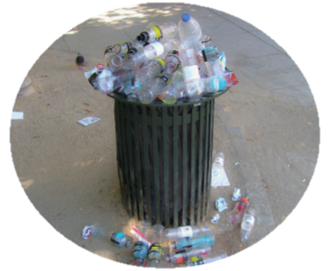

BAHAYA
SAMPAH ANORGANIK
PENYEBAB DARIBERBAGAI PENYAKITPlastik yang merupakan contoh dari sampah anorganik yang berkumpul di laut perlahan-lahan akan memecah diri menjadi mikroplastik. Mikroplastik ini, pada akhirnya dapat termakan kembali oleh manusia dan dapat membahayakan kesehatan manusia dan binatang di sekitarnya. Beberapa penyakit yang dapat diderita adalah keracunan makanan, gangguan pada berbagai organ tubuh dan penurunan kecerdasan. |
||
MENINGKATNYA PENCEMARANDengan adanya pembakaran sampah dan pembuangan sampah tidak pada tempatnya, kualitas udara dan air akan semakin menurun hari demi hari. Hal ini dikarenakan pembakaran sampah dapat meningkatkan partikel CO, CO2, NO, dan asap di udara. Sedangkan untuk pencemaran air ditimbulkan oleh penyebaran bahan kimia dan mikroorganisme yang berada di dalam sampah. |
||
DAMPAK TERHADAPLINGKUNGAN SOSIALBahaya sampah terhadap kegiatan sosial dan ekonomi yang dapat ditimbulkan, diantaranya, membentuk lingkungan yang kurang menyenangkan bagi masyarakat, bau yang tidak sedap dan pemandangan yang buruk karena sampah bertebaran dimana-mana. |
 | |